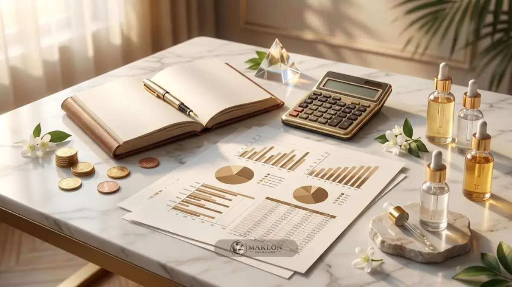

Perhitungan biaya dan margin profit formulasi brightening dimulai dari menghitung HPP per unit, lalu menguranginya dari harga jual bersih setelah biaya kanal, iklan, dan retur.
- Kemenperin (Mei 2026) menyebut bahan baku kosmetik nasional masih sekitar 80 persen impor, sehingga kurs dan pasokan memengaruhi HPP.
- HPP mencakup bahan atau jasa maklon, kemasan, label, dan kontrol mutu per unit.
- Margin sehat dihitung setelah promo, biaya platform, iklan, dan retur.
- Break-even dihitung dari biaya satu kali dibagi kontribusi laba per unit.
- Semua angka contoh pada artikel ini hipotetis dan bukan harga pasar.
Komponen Apa Saja dalam HPP Serum Brightening?
Harga Pokok Penjualan (HPP) serum brightening terdiri dari biaya formula atau jasa maklon, kemasan primer dan sekunder, label, kontrol mutu, dan biaya pengiriman bahan, dihitung per unit produk jadi.
Biaya formula sangat dipengaruhi oleh konsentrasi serta mutu bahan aktif seperti niacinamide dan alpha arbutin.
Pada skema maklon skincare ODM, pos biaya formula ini umumnya sudah tercakup dalam harga per botol yang ditawarkan oleh pabrik.
Sementara pada skema maklon skincare OEM, biaya riset dan pengembangan formula dapat dihitung secara terpisah di awal proyek.
Komponen kemasan sering kali menjadi porsi pengeluaran yang besar, terutama penggunaan botol kaca dengan pompa atau dropper eksklusif serta dus kustom luar.
Jangan lupa memasukkan faktor toleransi susut produksi dan risiko kerusakan barang selama proses pengisian di pabrik.
Hitunglah selalu angka HPP riil dari lembar penawaran harga tertulis pihak pabrik maklon skincare, bukan sekadar perkiraan kasar lisan.
Bagaimana Rumus Menghitung Margin Profit Skincare?
Margin profit dihitung dengan mengurangi HPP dan seluruh biaya penjualan dari harga jual, lalu membagi hasilnya dengan harga jual dan mengalikannya dengan 100 persen.
Rumus kontribusi laba per unit: harga etalase dikurangi HPP, potongan promo, komisi platform e-commerce dan biaya pembayaran, anggaran iklan, serta alokasi retur barang.
Margin kontribusi dihitung dengan membagi kontribusi laba bersih per unit tersebut dengan harga jual etalase.
Biaya satu kali seperti pengurusan notifikasi izin BPOM, jasa desain grafis, foto katalog, sampel lab, dan uji stabilitas tidak dimasukkan ke dalam HPP per unit.
Biaya-biaya tersebut dikelompokkan tersendiri untuk menghitung target titik balik modal (break-even point).
Pemisahan pos biaya tetap ini menjaga analisis perhitungan margin keuntungan operasional harian Anda tetap objektif dan jernih.
Seperti Apa Contoh Simulasi Perhitungannya?
Pada contoh hipotetis sediaan serum wajah 30 ml berharga etalase Rp129.000 dengan HPP Rp33.000, kontribusi laba per unit adalah Rp43.110, atau margin kontribusi sekitar 33,4 persen.
| Komponen (per unit, hipotetis) | Nilai |
|---|---|
| Harga etalase jual | Rp129.000 |
| HPP (formula & jasa maklon Rp22.000, kemasan Rp9.000, label & QC Rp2.000) | Rp33.000 |
| Diskon promo rata-rata 10 persen | Rp12.900 |
| Biaya platform & sistem pembayaran 9 persen | Rp11.610 |
| Biaya iklan berbayar (CAC) 20 persen | Rp25.800 |
| Cadangan retur & kerusakan 2 persen | Rp2.580 |
| Kontribusi laba per unit | Rp43.110 |
| Margin kontribusi | 33,4 persen |
Semua angka pada tabel simulasi di atas merupakan asumsi ilustrasi edukatif semata.
Persentase aktual di lapangan akan bervariasi bergantung pada jenis kanal e-commerce, kategori sediaan, dan periode kampanye promosi.
Gantikan selalu angka-angka tersebut dengan data pembukuan nyata dari bisnis kecantikan Anda.
Bagaimana Menghitung Titik Balik Modal?
Titik balik modal (break-even point) dihitung dengan membagi total biaya satu kali dengan kontribusi laba per unit.
Perhitungan ini menunjukkan jumlah unit sediaan yang wajib terjual habis sebelum brand Anda mulai membukukan laba bersih murni.
Misalkan total biaya satu kali hipotetis sebesar Rp25.000.000 untuk pos notifikasi BPOM, desain branding, pemotretan produk, sampel lab, dan uji stabilitas.
Dengan kontribusi laba Rp43.110 per unit, titik balik modal adalah Rp25.000.000 dibagi Rp43.110, yaitu tercapai pada penjualan sekitar 580 unit setelah dibulatkan ke atas.
Hitung juga perkiraan waktu yang dibutuhkan untuk menjual jumlah unit tersebut berdasarkan target penjualan bulanan Anda.
Bila durasinya dinilai terlalu lama, pertimbangkan untuk menekan biaya awal atau melakukan penyesuaian harga jual etalase.
Faktor Apa yang Membuat Biaya Formulasi Brightening Berbeda?
Biaya produksi dapat berbeda-beda karena dipengaruhi oleh kadar dan mutu bahan aktif, kemurnian bahan baku, jenis kemasan, kuantitas minimum order (MOQ), jumlah pengujian lab, serta fluktuasi kurs mata uang asing.
Kemenperin pada Mei 2026 menegaskan bahwa bahan baku industri kosmetik nasional masih sekitar 80 persen mengandalkan impor.
Konsekuensinya, pergerakan kenaikan kurs valuta asing dapat langsung menaikkan angka HPP dan menekan margin laba usaha.
Tanyakan sejak awal kepada pihak pabrik rekanan bagaimana mekanisme penyesuaian harga jika terjadi perubahan kurs bahan baku impor.
Kadar bahan aktif yang lebih tinggi tidak selalu sebanding dengan hasil khasiat, justru meningkatkan pos biaya sediaan dan memicu risiko iritasi kulit.
Rujukan batas aman alpha arbutin dan kadar niacinamide yang ideal telah dibahas tuntas pada panduan formulasi brightening niacinamide dan alpha arbutin.
Biaya Tersembunyi Apa yang Sering Terlewat?
Biaya yang sering terlewat meliputi pos revisi sampel di luar kuota kontrak, uji laboratorium tambahan, sisa stok kemasan botol atau dus, biaya pembaruan izin notifikasi tiga tahunan, ongkos kirim bahan, retur barang rusak, serta anggaran pembuatan materi konten kreator.
Brand pemula juga kerap lupa memperhitungkan kerugian dari stok mati (dead stock), yaitu produk yang tidak terjual hingga mendekati tanggal kedaluwarsa.
Sediakan dana cadangan darurat (contingency fund) sebesar sebagian dari total biaya satu kali untuk mengantisipasi perubahan kebutuhan tak terduga.
Catat seluruh pos pengeluaran dalam satu lembar kerja keuangan terpusat semenjak proyek maklon dimulai.
Dokumentasi yang tertata rapi akan mempermudah evaluasi berkala dan penyesuaian struktur harga jual pada batch produksi berikutnya.
Bagaimana Menjaga Margin Tetap Sehat?
Jaga margin keuntungan dengan menegosiasikan kuota minimum order dan struktur harga bertingkat (tier pricing) bersama pabrik maklon.
Langkah lainnya mencakup menyederhanakan jenis kemasan, membatasi diskon promo berlebihan, mengoptimalkan efisiensi iklan berbayar, dan mendorong pembelian berulang (repeat order).
Pembelian ulang dari pelanggan setia adalah pilar margin terkuat untuk produk perawatan harian karena biaya akuisisinya jauh lebih murah.
Tawarkan paket bundling hemat atau sistem langganan berkala melalui skema paket starter maklon.
Pantau rasio Customer Acquisition Cost (CAC) terhadap kontribusi laba per botol secara mingguan.
Hindari terjebak perang harga melawan brand besar yang memiliki kapasitas modal dan skala produksi raksasa.
Kompetisi yang bertumpu pada edukasi bahan aktif, pengalaman pelanggan yang memuaskan, dan kepercayaan kualitas terbukti jauh lebih berkelanjutan.
Pelajari pula panduan mendalam pada artikel mitos vs fakta seputar OEM/ODM skincare agar asumsi perencanaan biaya Anda tidak keliru.
Apa Kesalahan Umum dalam Menghitung Margin?
Kesalahan umum adalah memakai harga jual kotor sebagai patokan laba bersih, serta mengabaikan potongan diskon promo dan biaya iklan digital.
Kekeliruan fatal lainnya mencakup tidak memisahkan pos biaya satu kali dari perhitungan HPP rutin, serta tidak memperhitungkan cadangan penyusutan barang rusak atau retur paket.
Banyak pemula yang juga menetapkan harga jual semata-mata meniru kompetitor tanpa menghitung HPP formulanya sendiri, serta enggan memperbarui hitungan saat harga bahan baku naik.
Selalu lakukan perhitungan ulang HPP dan margin profit secara disiplin pada setiap siklus batch produksi baru.
Konsultasikan Perhitungan HPP & Paket Maklon Skincare
Ingin memulai bisnis kosmetik dengan estimasi HPP transparan, formulasi berkualitas standar CPKB, serta dukungan legalitas BPOM & Halal lengkap? Diskusikan ide produk dan anggaran investasi Anda bersama tim konsultan kami melalui layanan konsultasi maklon skincare hari ini.
Kesimpulan: 4 Pilar Pengelolaan Finansial Maklon
Perhitungan margin profit formulasi brightening yang akurat memisahkan HPP per unit, biaya penjualan, dan biaya satu kali, lalu menghitung titik balik modal dari kontribusi laba per unit.
- Hitung HPP secara terperinci berdasarkan surat penawaran resmi dari pabrik.
- Kurangi alokasi promo, biaya platform e-commerce, iklan berbayar, dan retur dari harga jual etalase.
- Pisahkan biaya satu kali untuk menentukan target kuantitas titik balik modal (BEP).
- Perbarui kalkulasi finansial secara berkala pada setiap batch produksi baru.
Catatan: Seluruh angka contoh pada artikel ini bersifat ilustrasi hipotetis dan bukan merupakan nasihat keuangan resmi. Sesuaikan perhitungan dengan data pembukuan nyata Anda dan konsultasikan dengan konsultan akuntansi bila diperlukan.